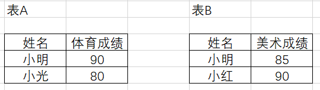
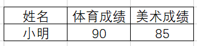
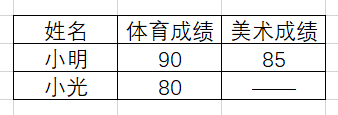
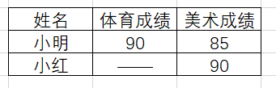
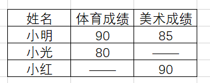

5 快速整理：基于data.table的数据处理工具
在实践中，我们往往需要对数据框进行复杂的清洗转化操作，包括创建、添加、删除、插入、排序、过滤、分组、汇总、连接、长宽转换等。这些操作使用频次很高，因此初学者需要在刚入门的时候就对这些操作有所熟悉，这样在需要用的时候才可以按图索骥找到答案。在R语言中，要对一张大表格进行整理，最佳的工具就是data.table工具包。本部分将先以数据操作的基本范式作为引入，然后介绍如何使用data.table包完成这些基本的数据操作，进而介绍基于data.table包构建的tidyfst包，以满足多元化的需求。
5.1 数据整理的基本操作模式
对数据处理基本范式的探索最早可以追溯到1970年，当时在IBM工作的牛津大学数学家Edgar F. Codd首次提出了“关系模型”，并具体给出应该遵循的基本准则）。其后，陈品山博士在1976年提出了实体关系模型（Entity-Relationship Model），运用真实世界中事物与关系的观念，来解释数据库中抽象的数据架构。最初对于这些数据处理的实现，主要是由SQL语言来实现的，它是1974年由Boyce和Chamberlin提出的一种介于关系代数与关系演算之间的结构化查询语言，是一个通用的、功能极强的关系型数据库语言。SQL对业界的影响是极其深远的，各大软件公司都有支持SQL语言的数据库产品，比如甲骨文的Oracle和微软的SQL Server。需要明确的是，数据操作的基本范式不依赖于任何软件平台，它是一个概念模型，可以在各种软件工具中得以实现，因此在本部分我们会暂时脱离软件工具来介绍数据处理的基本范式。在介绍之前，我们目前需要有一个概念是，现在有一张二维表格，需要对表格的数据进行数据处理。基本处理方法包括创建、删除、检索、插入、排序、过滤、汇总、分组和连接，下面我们会对这些基本的数据操
5.1.1 创建
创建的概念非常简单，就是从无到有建立一张二维表。重要的是，我们需要二维表是由什么构成的：1.行；2.列。其中，每一列可以称之为属性或者特征，在一些数据库系统中，我们创建表格的时候是需要对每一列的属性进行定义的。比如我们创建“性别”列的时候，如果里面只有“男”和“女”两种类型的数据，我们一般需要把它定义为字符型。这在不同的数据库系统中不一样，但是我们创建的时候应该对列的名称进行定义。每一行则代表一个记录，也就是在现实世界中的一个实例，比如一个人、一个商品或者是一个城市。
5.1.2 删除
删除就是把已经存在的表格，在环境中删除掉。
5.1.3 检索
这里讲的检索，包括两种，即列检索与行检索。列检索，即对数据表中的列进行选择。选择列可以有很多规则，有的时候我们可以选择特定列，比如我们就像看学生期末语文成绩是多少；有的时候可以选择连续的列，比如我们要看第1到第10列的内容；有的时候可以按照规则选择列，比如我们想要检索列名称以_id作为后缀的列。行检索，则是根据行号对记录进行切片筛选，比如选取地100到200行的记录。如果需要按照条件来对行进行筛选，我们称之为过滤，这在后面会专门提到。
5.1.4 插入
插入就是给表格插入一行，本质上是给总体加入一条记录。举个例子就是，如果老师有全班同学的点名册，现在有一个新的同学加入，那么这个点名册就需要再加一个同学。同时，我们也可以加入一列。比如一年级的同学只需要学习语文、数学和英语，如果到了二年级需要加一门生物课，那么就需要加入新的一列来记录学生的生物成绩。
5.1.5 排序
排序的概念就是，当我们碰上数值型数据的时候，我们可以让这些记录按照升序或者降序排列（升序就是从小到大排列，降序就是从大到小排列）。比如乱序的1,3,5,2,4，经过升序排序可以变成1,2,3,4,5。我们知道，表格可以有很多列，排序的时候需要指定按照哪一个列排序。比如学生有语文、数学和英语成绩，我们只能够按照一种成绩排序，否则会乱成一团。不过事实上可以按照多列排序，但是需要有一定顺序，比如我们可以用学生的成绩先用语文成绩排序，然后再按照数学成绩排序。本来，有的同学本来语文成绩是相同的，因此他们的顺序是随机的；现在，如果学生的语文成绩相同，那么就会按照数学成绩的多少来进行排列。
5.1.6 过滤
过滤就是按照一定的规则来筛选数据。举例说明，我们有全班同学的成绩，但是我们可以按照性别筛选出男同学的成绩；我们也可以按照数学成绩是否达到60分，来筛选出数学不及格同学的成绩。
5.1.7 汇总
汇总，就是要用较少的信息来表征较多的信息。举个例子，我们现在有全班同学的身高，如果我们对这个身高计算平均值，就完成了一个汇总。我们原来的数据可能是五十多名学生的身高，现在我们只用一个平均值就可以代表总体身高的平均水平，用较少的信息表征了较多的信息。汇总的方法可以有很多种，除了求均值，我们还可以求中位数、最大值、最小值等等。
5.1.8 分组
分组就是按照一定的规则给数据表分类，然后按照类别分别进行操作。举例说明，如果我们现在有一个班的学生，我们想知道男同学的语文成绩和女同学的语文成绩，这时候就要根据性别对表格进行分组。分组的功能是很强大的，比如我们有12个班级，要得到每个班级成绩最好的前三名同学，就可以用分组操作进行实现。
5.1.9 连接
连接就是根据多个表都包含的共同信息，对多个表格进行合并的过程。连接分为左连接、右连接、全连接、内连接等。比如我们现在知道三个学生小明、小光和小红，有两张表A和B，分别包含了他们的体育和美术成绩。其中，小红缺考体育，小光缺考美术。两张表格信息如图5.1所示。
现在我们需要通过一定的方式把这两张表格连接起来。下面以此为例，把表格A作为左表，表格B作为右表，分别演示如何进行内连接、左连接、右连接和全连接。
- 内连接：又称为自然连接，只有两个表格中都包含的信息才会被保留。在我们例子中，只有两个表格都出现的同学小明，才会在合并的表格出现，所得结果见图5.2。

- 左连接：只有左边的（第一个出现的）表格的信息会予以完全的保留，右边的表格只有能够匹配左表的信息的内容才会得以保留，结果见图5.3。如果左表存在的信息而右表不存在，会自动填充缺失值。

- 右连接：即左连接的逆运算，结果见图5.4。

- 全连接：左右表格的信息都会予以保留，无信息处会自动填充缺失值，结果见图5.5。

5.2 data.table数据处理
5.2.1 data.table简介
data.table是R语言中的高性能数据处理包，旨在提供比基础数据框（data.frame）更简洁的语法和更丰富的功能。它不仅在数据操作速度上具有显著优势，而且对内存的使用也更加经济，适合处理大规模数据集。data.table的主要功能包括快速的文件读写，通过fread和fwrite函数可以高效地读取和写入csv文件。同时，工具包的底层并行化功能使许多常见操作能够利用多个CPU线程，进一步提升数据处理效率。对于大规模数据集，data.table可以实现快速且可扩展的聚合操作，例如能够在内存中处理100GB的数据（前提是计算机的内存需要大于100GB）。
data.table具有强大的数据处理能力，比如在连接操作方面，data.table提供了丰富的选项，包括有序连接、重叠区间连接、非等值连接、基于连接的汇总和更新等。这些功能使得复杂数据操作变得更加简便高效。此外，data.table支持基于引用的快速列操作，允许用户快速地添加、更新或删除列，而无需复制数据。这对于大数据集尤为重要，因为它避免了不必要的内存消耗和时间开销。数据重塑功能也是data.table的一大亮点，通过dcast和melt函数，可以轻松实现数据列表的长宽转换。另一个显著优势是，data.table几乎没有外部依赖，除了基础R之外，无需其他包。这简化了生产环境中的部署和维护工作。同时，data.table兼容旧版本的R，确保了在不同系统和环境中的稳定性和一致性。
总之，data.table以其高效的性能、简洁的语法和丰富的功能，成为R语言中处理和分析大规模数据的理想工具。它不仅提高了数据处理的速度和效率，还通过稳定的API和强大的社区支持，为用户提供了一个强大而可靠的解决方案。
5.2.2 基本操作实现
本部分将介绍如何使用data.table包来实现前一个小节提出的数据整理基本操作模式。尽管很多用户反馈data.table的语法结构非常难学，但其实熟悉了语法逻辑之后还是可以轻松掌握。首先我们将载入data.table包。
library(data.table)5.2.2.1 创建
data.table包中设置了一种称之为data.table的数据结构，data.table是data.frame的增强模式，它具备的特征如下：
行号使用冒号（
:）打印，以便在视觉上将行号与第一列分开。当记录个数超过n行时（默认n等于100），会自动显示前五行和后五行，不会像数据框一样无限输出。这个可以使用
options(datatable.print.nrows = n)来设定n是多少，同时可以用getOption("datatable.print.nrows")来对n进行查询data.table从来不使用行名称。
在我们的演示案例中，我们认为显示前2列和后2列就足够了，因此利用options函数进行设置：
options(datatable.print.topn = 2)要在R环境中创建data.table格式的表格，有三种形式：1.内部创建；2.强制转化；3.外部读入。我们会分别进行介绍。
5.2.2.1.1 内部创建
创建data.table其实与创建data.frame的语法完全一样。事实上，所有data.table都继承data.frame的所有属性。下面我们创建一个基本的data.table。
DT = data.table(
ID = c("b","b","b","a","a","c"),
a = 1:6,
b = 7:12,
c = 13:18
)
DT ID a b c
<char> <int> <int> <int>
1: b 1 7 13
2: b 2 8 14
3: b 3 9 15
4: a 4 10 16
5: a 5 11 17
6: c 6 12 18让我们看看它的数据结构：
str(DT)Classes 'data.table' and 'data.frame': 6 obs. of 4 variables:
$ ID: chr "b" "b" "b" "a" ...
$ a : int 1 2 3 4 5 6
$ b : int 7 8 9 10 11 12
$ c : int 13 14 15 16 17 18
- attr(*, ".internal.selfref")=<externalptr> 可以发现，它既是一个data.table，也是一个data.frame。
5.2.2.1.2 强制转化
我们可以把已经有的数据框、矩阵和列表转化为data.table格式。转化函数有两个，一个是as.data.table函数，一个是setDT函数。前者与as.data.frame是一样的，能够随意自由转换成别的格式。setDT实现的功能是原位转化，转化之后不需要赋值，原始的变量直接变成了data.table。这里我们对这两个函数分别进行演示。 首先，我们的案例主要用到iris数据集，因此我们要把它转化为data.table格式，存放在iris.dt变量中。
as.data.table(iris) -> iris.dt
iris.dt Sepal.Length Sepal.Width Petal.Length Petal.Width Species
<num> <num> <num> <num> <fctr>
1: 5.1 3.5 1.4 0.2 setosa
2: 4.9 3.0 1.4 0.2 setosa
---
149: 6.2 3.4 5.4 2.3 virginica
150: 5.9 3.0 5.1 1.8 virginica然后，我们再来尝试setDT函数。需要明确的是，如果用setDT函数就不需要额外进行赋值，返回结果会自动赋值给原来的变量。我们会用mtcars数据集来举例，因为基本包内置数据集是不能随便更改的，因此我们先赋值给a。
mtcars -> a
str(a)'data.frame': 32 obs. of 11 variables:
$ mpg : num 21 21 22.8 21.4 18.7 18.1 14.3 24.4 22.8 19.2 ...
$ cyl : num 6 6 4 6 8 6 8 4 4 6 ...
$ disp: num 160 160 108 258 360 ...
$ hp : num 110 110 93 110 175 105 245 62 95 123 ...
$ drat: num 3.9 3.9 3.85 3.08 3.15 2.76 3.21 3.69 3.92 3.92 ...
$ wt : num 2.62 2.88 2.32 3.21 3.44 ...
$ qsec: num 16.5 17 18.6 19.4 17 ...
$ vs : num 0 0 1 1 0 1 0 1 1 1 ...
$ am : num 1 1 1 0 0 0 0 0 0 0 ...
$ gear: num 4 4 4 3 3 3 3 4 4 4 ...
$ carb: num 4 4 1 1 2 1 4 2 2 4 ...现在，让我们把a变量变成data.table格式。
setDT(a)
str(a)Classes 'data.table' and 'data.frame': 32 obs. of 11 variables:
$ mpg : num 21 21 22.8 21.4 18.7 18.1 14.3 24.4 22.8 19.2 ...
$ cyl : num 6 6 4 6 8 6 8 4 4 6 ...
$ disp: num 160 160 108 258 360 ...
$ hp : num 110 110 93 110 175 105 245 62 95 123 ...
$ drat: num 3.9 3.9 3.85 3.08 3.15 2.76 3.21 3.69 3.92 3.92 ...
$ wt : num 2.62 2.88 2.32 3.21 3.44 ...
$ qsec: num 16.5 17 18.6 19.4 17 ...
$ vs : num 0 0 1 1 0 1 0 1 1 1 ...
$ am : num 1 1 1 0 0 0 0 0 0 0 ...
$ gear: num 4 4 4 3 3 3 3 4 4 4 ...
$ carb: num 4 4 1 1 2 1 4 2 2 4 ...
- attr(*, ".internal.selfref")=<externalptr> 现在，我们虽然没有再次把结果赋值给a，但是a已经变为data.table的格式了。
5.2.2.1.3 外部读入
fread也许是是目前R语言中读取csv格式文件最快的函数，关于它的各种高级特性，可以在官网https://github.com/Rdatatable/data.table/wiki/Convenience-features-of-fread中进行了解。如果希望知道它有什么个性化的参数设置，可以用?fread进行查询。事实上它的使用是非常简便的，直接放入文件路径即可读取任意csv文件，并返回一个data.table格式的变量。 在我们的例子中，先读出一个变量到根目录下名为temp的文件夹中。data.table的fwrite函数一样非常有名，它是写出csv格式数据最快的函数。
fwrite(iris.dt,"temp/iris.csv")接下来，我们重新读入。
#用fread读入文件，赋值给iris.1变量
fread("temp/iris.csv") -> iris.1
#查看iris.1的数据类型
class(iris.1) [1] "data.table" "data.frame"操作实在太简便了，不过iris数据集太小了，大家看不到它的威力。如果条件允许的读者，可以拿非常大的csv进行读写尝试，使用方法是一样的，加速效果非常明显。
5.2.2.2 删除
表格删除在所有R环境中基本都是一样的，都是使用rm函数。这里我们删除掉所有的变量，但是留下iris.dt变量做演示：
rm(list=setdiff(ls(), "iris.dt"))此外，我们每次都在temp文件夹中写出文件，但是并没有删除它。其实我们会尝试利用R软件来管理文件夹中的文件，因此我们会对之前在temp文件夹中创建的文件进行删除。我们还记得，之前写出文件的文件名是“iris.csv”，我们用基本包的file.exists函数看看这个文件是否还在temp文件夹中。
file.exists("temp/iris.csv")[1] TRUE返回了一个逻辑值TRUE，说明这个文件还在temp文件夹中，下面我们用file.remove函数把它删除掉。
file.remove("temp/iris.csv")[1] TRUE返回值证明我们已经成功删除掉了，让我们再看它是否存在。
file.exists("temp/iris.csv")[1] FALSE现在我们在temp文件夹中已经找不到这个文件了。
5.2.2.3 检索
检索是最基本的操作，但是我们需要明确的是，检索返回的一般还是一个data.table。我们需要统一返回的格式，这样有利于规范我们的数据处理范式。
5.2.2.3.1 行检索
因为data.table永远不会使用行名称，因此对行的检索只能够通过序号，也就是告诉程序我们要检索第几行。操作基本与基本包的data.frame类似，但是我们要永远记住，data.table的最基本格式是DT[i,j,by]。其中，i控制行，j控制列，by控制分组。要进行行检索，只要对i进行控制即可。尽管在语法上，data.table允许缺省其他逗号，直接对行进行检索（即DT[i]）。但是这里不建议这么做，而是倡导永远把所有逗号补全（即DT[i,,]）。自由诚可贵，规范价更高，只有规范的风格才能让我们的代码走得更长远。下面我们来举例子熟悉一下操作，比如我们要在选取数据框的第2行，可以这样操作：
iris.dt[2,,] Sepal.Length Sepal.Width Petal.Length Petal.Width Species
<num> <num> <num> <num> <fctr>
1: 4.9 3 1.4 0.2 setosa如果要选取第2-5行，可以这样操作：
iris.dt[2:5,,] Sepal.Length Sepal.Width Petal.Length Petal.Width Species
<num> <num> <num> <num> <fctr>
1: 4.9 3.0 1.4 0.2 setosa
2: 4.7 3.2 1.3 0.2 setosa
3: 4.6 3.1 1.5 0.2 setosa
4: 5.0 3.6 1.4 0.2 setosa如果需要选取第3、5、9行，可以这样操作：
iris.dt[c(3,5,9),,] Sepal.Length Sepal.Width Petal.Length Petal.Width Species
<num> <num> <num> <num> <fctr>
1: 4.7 3.2 1.3 0.2 setosa
2: 5.0 3.6 1.4 0.2 setosa
3: 4.4 2.9 1.4 0.2 setosa去除第2到4行，可以这样操作：
iris.dt[-(2:4),,] #等价于iris.dt[!2:4,,] Sepal.Length Sepal.Width Petal.Length Petal.Width Species
<num> <num> <num> <num> <fctr>
1: 5.1 3.5 1.4 0.2 setosa
2: 5.0 3.6 1.4 0.2 setosa
---
146: 6.2 3.4 5.4 2.3 virginica
147: 5.9 3.0 5.1 1.8 virginica我们可以看到，如果需要选择多行，就需要使用向量来操作。
5.2.2.3.2 列检索
列检索与基本包有相似之处，但并不完全相同。我们可以根据序号和列名称来检索数据表的列。先介绍用序号来选择，因为它与数据框的操作基本是一样的，但是我们不能忘记其经典的DT[i,j,by]格式。比如我们要选取其中的第二列，可以这样操作：
iris.dt[,2,] Sepal.Width
<num>
1: 3.5
2: 3.0
---
149: 3.4
150: 3.0选取第2-4列，可以这样操作：
iris.dt[,2:4,] Sepal.Width Petal.Length Petal.Width
<num> <num> <num>
1: 3.5 1.4 0.2
2: 3.0 1.4 0.2
---
149: 3.4 5.4 2.3
150: 3.0 5.1 1.8选取第1、3、5列，可以这样操作：
iris.dt[,c(1,3,5),] Sepal.Length Petal.Length Species
<num> <num> <fctr>
1: 5.1 1.4 setosa
2: 4.9 1.4 setosa
---
149: 6.2 5.4 virginica
150: 5.9 5.1 virginica去除第2到3列，可以这样操作：
iris.dt[,-(2:3),] #等价于iris.dt[,!2:3,] Sepal.Length Petal.Width Species
<num> <num> <fctr>
1: 5.1 0.2 setosa
2: 4.9 0.2 setosa
---
149: 6.2 2.3 virginica
150: 5.9 1.8 virginica现在，我们尝试利用列的名称对表格的列进行检索。尽管我们可以把列名称直接放在DT[i,j,by]中的j里面，即输入iris.dt[,Sepal.Length,]。但是这样会返回一个向量，而不是data.table，因此我们不会用这个方法。要返回data.table格式，需要在查询列名称的时候输入.()格式。 比如我们取出Sepal.Length列：
iris.dt[,.(Sepal.Length),] Sepal.Length
<num>
1: 5.1
2: 4.9
---
149: 6.2
150: 5.9如果要取出多列，直接加上其他列名称即可，中间用逗号分隔：
iris.dt[,.(Sepal.Length,Sepal.Width,Species),] Sepal.Length Sepal.Width Species
<num> <num> <fctr>
1: 5.1 3.5 setosa
2: 4.9 3.0 setosa
---
149: 6.2 3.4 virginica
150: 5.9 3.0 virginica其实，行列检索是可以同时检索的。比如我们需要提取第3到5行的第1到3列，可以这样进行编程：
iris.dt[3:5,1:3,] Sepal.Length Sepal.Width Petal.Length
<num> <num> <num>
1: 4.7 3.2 1.3
2: 4.6 3.1 1.5
3: 5.0 3.6 1.45.2.2.4 插入
因为data.table本质上还是一个data.frame，因此如果要按照行列进行合并，操作与基本包是完全一致的，依然是用rbind和cbind函数。不过data.table构造一个新列，是需要知道如何操作的。因为它跟我们之前的认识并不一致，需要用到:=进行赋值。比方说，我们要给iris.dt增加一个常数列，名称为new.column，所有数字均为1，可以这样操作：
iris.dt[,new.column := 1,]
iris.dt Sepal.Length Sepal.Width Petal.Length Petal.Width Species new.column
<num> <num> <num> <num> <fctr> <num>
1: 5.1 3.5 1.4 0.2 setosa 1
2: 4.9 3.0 1.4 0.2 setosa 1
---
149: 6.2 3.4 5.4 2.3 virginica 1
150: 5.9 3.0 5.1 1.8 virginica 1在data.table中增加新列，是会直接进行更新（而不需要进行赋值）。也就是说，iris.dt在插入列的那一刻，它就不是它自己了，而是加入了一列的它。如果想要删除这一列，需要把空值NULL赋值给这一列。
iris.dt[,new.column := NULL,]
iris.dt Sepal.Length Sepal.Width Petal.Length Petal.Width Species
<num> <num> <num> <num> <fctr>
1: 5.1 3.5 1.4 0.2 setosa
2: 4.9 3.0 1.4 0.2 setosa
---
149: 6.2 3.4 5.4 2.3 virginica
150: 5.9 3.0 5.1 1.8 virginica这样它就还原为我们最初的表格了。 很多data.table爱好者认为这是一个很优良的特性，觉得省事儿了，可以少写一个赋值语句。这其实要客观地看待，因为很多时候我们还希望重复利用原来的表格，但是这样赋值之后我们原来的表格就永远地发生了变化，原来的表格就不在了。在这种情况下，我们就可以先通过赋值做一个备份，然后使用备份进行添加列的操作，那么原始表格的数据也得以保留。
5.2.2.5 排序
data.table的排序基本与data.frame相似，就是对变量进行排序，这需要用order函数。不过data.table数据格式已经进行优化，我们不需要每次都用$来进行取值。 举个例子，如果我们要根据Sepal.Length进行升序排列，可以这样进行操作：
iris.dt[order(Sepal.Length),,] Sepal.Length Sepal.Width Petal.Length Petal.Width Species
<num> <num> <num> <num> <fctr>
1: 4.3 3.0 1.1 0.1 setosa
2: 4.4 2.9 1.4 0.2 setosa
---
149: 7.7 3.0 6.1 2.3 virginica
150: 7.9 3.8 6.4 2.0 virginica降序排列加入负号即可：
iris.dt[order(-Sepal.Length),,] Sepal.Length Sepal.Width Petal.Length Petal.Width Species
<num> <num> <num> <num> <fctr>
1: 7.9 3.8 6.4 2.0 virginica
2: 7.7 3.8 6.7 2.2 virginica
---
149: 4.4 3.2 1.3 0.2 setosa
150: 4.3 3.0 1.1 0.1 setosa多个变量排序也与基本包一样，比如需要先对Sepal.Length进行升序排列，再对Sepal.Width进行降序排列，那么可以这样操作：
iris.dt[order(Sepal.Length,-Sepal.Width),,] Sepal.Length Sepal.Width Petal.Length Petal.Width Species
<num> <num> <num> <num> <fctr>
1: 4.3 3.0 1.1 0.1 setosa
2: 4.4 3.2 1.3 0.2 setosa
---
149: 7.7 2.6 6.9 2.3 virginica
150: 7.9 3.8 6.4 2.0 virginica5.2.2.6 过滤
在data.table进行过滤，主要是靠DT[i,j,by]中的i来进行的，也就是把条件放在i中即可。比如，我们要选择Sepal.Length等于5.1的记录：
iris.dt[Sepal.Length == 5.1,,] Sepal.Length Sepal.Width Petal.Length Petal.Width Species
<num> <num> <num> <num> <fctr>
1: 5.1 3.5 1.4 0.2 setosa
2: 5.1 3.5 1.4 0.3 setosa
3: 5.1 3.8 1.5 0.3 setosa
4: 5.1 3.7 1.5 0.4 setosa
5: 5.1 3.3 1.7 0.5 setosa
6: 5.1 3.4 1.5 0.2 setosa
7: 5.1 3.8 1.9 0.4 setosa
8: 5.1 3.8 1.6 0.2 setosa
9: 5.1 2.5 3.0 1.1 versicolor可以通过且（&）、或（|）、非（!）来进行条件控制，这一点跟基本包data.frame是一样的。比如，我们要选择Sepal.Length等于5.1且Sepal.Width大于3.5的记录，可以这样操作：
iris.dt[Sepal.Length == 5.1 & Sepal.Width > 3.5,,] Sepal.Length Sepal.Width Petal.Length Petal.Width Species
<num> <num> <num> <num> <fctr>
1: 5.1 3.8 1.5 0.3 setosa
2: 5.1 3.7 1.5 0.4 setosa
3: 5.1 3.8 1.9 0.4 setosa
4: 5.1 3.8 1.6 0.2 setosa5.2.2.7 汇总
我们还记得，汇总就是把一个向量变为一个数值。在data.table中汇总需要控制DT[i,j,by]中的j。比如说我们要得到Sepal.Length的均值：
iris.dt[,mean(Sepal.Length),][1] 5.843333如果想要对多个列进行求均值的操作，就需要用到.SDcols和.SD这些指定的特殊符号了。比如我们现在要求Sepal.Length和Sepal.Width的均值，需要这么操作：
iris.dt[,lapply(.SD, mean, na.rm=TRUE),
.SDcols = c("Sepal.Length","Sepal.Width")] Sepal.Length Sepal.Width
<num> <num>
1: 5.843333 3.057333这个操作中，第一步是利用.SDcols来指定我们想要操作的列是哪些，.SD则是指数据的子集，它是数据根据分组返回的若干列。尽管我们没有分组，但是这里还是必须用lapply这个函数才能够正确完成操作。最后，我们还在最后设置了na.rm=TRUE来保证忽略缺失值。不过其实我们的数据中并没有缺失值，写出来只是为了告诉大家，能够用这种方法来对函数传递额外的参数。 因此我们知道，列名称是在.SDcols中进行选择的，所以也可以根据列名称进行筛选。比如我们要选列名称以“Width”结尾的变量的均值，可以利用基本包中的endsWith函数：
iris.dt[,lapply(.SD, mean, na.rm=TRUE),
.SDcols = endsWith(names(iris.dt),"Width")] Sepal.Width Petal.Width
<num> <num>
1: 3.057333 1.199333如果想要得到所有数值型变量的均值，需要得到数值型变量的变量名，然后放入.SDcols参数中即可。实现方法可以参考以下代码：
#sapply按照列来做函数操作，求得列向量数据类型
sapply(iris.dt,class) -> a
#把数据类型为数值型的列名称提取出来
names(a[a=="numeric"]) -> numeric.names
# 对数值型列进行求均值，忽略缺失值
iris.dt[,lapply(.SD, mean, na.rm=TRUE),
.SDcols = numeric.names] Sepal.Length Sepal.Width Petal.Length Petal.Width
<num> <num> <num> <num>
1: 5.843333 3.057333 3.758 1.199333不过其实还有另一种捷径可以完成这一步操作，就是直接使用is.numeric函数，实现方法如下：
iris.dt[,lapply(.SD, mean, na.rm=TRUE),
.SDcols = is.numeric]5.2.2.8 分组
data.table中分组是通过控制DT[i,j,by]中的by来实现的，by可以接收一个你需要进行分组的变量。这里建议尽量在变量中加入.()符号，这样可以保证结果返回另一个data.table。不过在只有一个变量的时候，其实是可以缺省的。下面举个例子，我们要根据Species分组，然后对Sepal.Length求平均值。这与我们之前的汇总操作一样，只是这次增设了一个by参数而已。
iris.dt[,mean(Sepal.Length),by = Species] Species V1
<fctr> <num>
1: setosa 5.006
2: versicolor 5.936
3: virginica 6.588不过这样的话，我们的列名称不够直观，我们可以使用.SDcols来控制我们需要处理的列。
iris.dt[,lapply(.SD, mean, na.rm=TRUE),
by = Species,
.SDcols = "Sepal.Length"] Species Sepal.Length
<fctr> <num>
1: setosa 5.006
2: versicolor 5.936
3: virginica 6.588对多个列进行操作也大同小异，操作方法如下：
iris.dt[,lapply(.SD, mean, na.rm=TRUE),
by = Species,
.SDcols = c("Sepal.Length","Sepal.Width")] Species Sepal.Length Sepal.Width
<fctr> <num> <num>
1: setosa 5.006 3.428
2: versicolor 5.936 2.770
3: virginica 6.588 2.974事实上，.SDcols可以放在DT[i,j,by]中任意位置。但是这里建议永远把这个部分放在最后，不要破坏传统的DT[i,j,by]结构，这样可以提高代码的可读性。
5.2.2.9 连接
在data.table中使用连接有以下特点：
- 如果两个表格都设置了主键，那么会优先基于主键进行连接。如果没有的话，跳到下一步。
- 如果只有第一个表格设置了主键，那么会优先基于第一个表格的主键进行连接。如果没有设置，跳到下一步。
- 基于两个表格拥有的共同列名称，对这些列进行连接。 如果需要自定义，请直接使用
by.x和by.y对两个表格需要连接的列进行设置。那么会直接跳过上面三个步骤进行自定义连接。
在data.table里面使用连接，可以使用merge函数。下面我们会对如何连接进行演示，首先构建顾客交易数据表：
df1 = data.table(CustomerId = c(1:6), Product = c(rep("Oven", 3), rep("Television", 3)))
df1 CustomerId Product
<int> <char>
1: 1 Oven
2: 2 Oven
3: 3 Oven
4: 4 Television
5: 5 Television
6: 6 Television再构建顾客地址数据表：
df2 = data.table(CustomerId = c(2, 4, 6), State = c(rep("California", 2), rep("Texas", 1)))
df2 CustomerId State
<num> <char>
1: 2 California
2: 4 California
3: 6 Texas首先我们尝试进行内连接：
df <- merge(x=df1,y=df2,by="CustomerId")
dfKey: <CustomerId>
CustomerId Product State
<int> <char> <char>
1: 2 Oven California
2: 4 Television California
3: 6 Television Texas这里建议大家尽量设置by参数，这样能够声明我们是根据哪一个列进行合并的。 左连接可以通过设置all.x = T来实现：
df<-merge(x=df1,y=df2,by="CustomerId",all.x=T)
dfKey: <CustomerId>
CustomerId Product State
<int> <char> <char>
1: 1 Oven <NA>
2: 2 Oven California
3: 3 Oven <NA>
4: 4 Television California
5: 5 Television <NA>
6: 6 Television Texas右连接则可以通过设置all.y=T进行实现：
df<-merge(x=df1,y=df2,by="CustomerId",all.y=T)
dfKey: <CustomerId>
CustomerId Product State
<int> <char> <char>
1: 2 Oven California
2: 4 Television California
3: 6 Television Texas如果要实现全连接，则设置all=T：
df<-merge(x=df1,y=df2,by="CustomerId",all=T)
dfKey: <CustomerId>
CustomerId Product State
<int> <char> <char>
1: 1 Oven <NA>
2: 2 Oven California
3: 3 Oven <NA>
4: 4 Television California
5: 5 Television <NA>
6: 6 Television Texas如果需要连接的列在两个表格中的列名称不一样，就要使用by.x和by.y来设置两个表格中用来连接的列。 下面举例说明，首先构造两个表格。
copy(iris.dt)[1:3,1:3,][,id := 1:3,][] -> dt1
copy(iris.dt)[1:3,3:5,][,id := 1:3,][] -> dt2上面的代码，使用了连锁管道操作（[][]），其实就是得到的data.table继续用[i,j,by]来进行操作。我们首先用copy函数得到iris.dt的一份拷贝，取了表格第1到3行。然后两个表格分别取了1到3列和3到5列。最后，我们给他们都加上了id标号，然后最后加上[]把它们取出来（这就是:=带来的副作用，它直接在原来的地方修改，但是原来的地方我们又没有采用变量来引用，所以我们是无法找到的，因此[]是必不可少的）。下面我们看看两个表格的内容：
dt1 Sepal.Length Sepal.Width Petal.Length id
<num> <num> <num> <int>
1: 5.1 3.5 1.4 1
2: 4.9 3.0 1.4 2
3: 4.7 3.2 1.3 3dt2 Petal.Length Petal.Width Species id
<num> <num> <fctr> <int>
1: 1.4 0.2 setosa 1
2: 1.4 0.2 setosa 2
3: 1.3 0.2 setosa 3我们可以看到，两个表格中都有Petal.Length和id两列，我们把第二个表格dt2的的这两列重新命名为“a”和“b”。
setnames(dt2,"Petal.Length","a") #把原来的Petal.Width列命名为a
setnames(dt2,"id","b") #把原来的id列命名为b
dt2 a Petal.Width Species b
<num> <num> <fctr> <int>
1: 1.4 0.2 setosa 1
2: 1.4 0.2 setosa 2
3: 1.3 0.2 setosa 3现在让我们使用内连接来合并dt1和dt2。
merge(dt1,dt2,by.x = c("Petal.Length","id"),by.y = c("a","b")) -> dt
dtKey: <Petal.Length, id>
Petal.Length id Sepal.Length Sepal.Width Petal.Width Species
<num> <int> <num> <num> <num> <fctr>
1: 1.3 3 4.7 3.2 0.2 setosa
2: 1.4 1 5.1 3.5 0.2 setosa
3: 1.4 2 4.9 3.0 0.2 setosa这样就成功完成连接了。只要by.x和by.y中的变量能够一一对应，就能够完成基于不同列名称的连接。
5.2.3 高级特性介绍
除了基本操作的实现以外，data.table包还提供了很多高级的特性，这使得该包在内存管理和高速检索等任务中具有明显的优势。尽管高级特性带来了更多的便捷，但是这也要求使用者对这些特性具有更加深入的理解。下面让我们来对这些特性进行探讨。
5.2.3.1 原位更新
在data.table包中，set家族（即以set开头的data.table函数）和:=可以对数据框进行原位修改，不需要再进行赋值。下面我们举个例子，还是用iris数据集，但是我们把它先赋值给iris2变量。
library(data.table)
iris -> iris2现在，我们要把iris2的表格转化为data.table格式，正常来说，我们需要使用as.data.table函数：
# 观察iris2的数据结构
class(iris2)[1] "data.frame"# 进行转化
as.data.table(iris2) -> iris.dt
# 观察iris.dt的数据结构
class(iris.dt)[1] "data.table" "data.frame"这样我们就把data.frame格式的iris2转化为data.table格式，并赋值给iris.dt。事实上我们还可以直接使用setDT函数，这时候，我们不需要再次进行赋值。
class(iris2)[1] "data.frame"setDT(iris2)
class(iris2)[1] "data.table" "data.frame"这时候我们发现，iris2本身已经转化为一个data.table。 :=是一种赋值的符号，它的特点是会在原始的表格中进行赋值，不需要赋值给新的变量。下面我们用刚刚创建的iris.dt做例子。我们给1到3行增加一列常数列，所有数值均为0，赋值给zero。
iris.dt[1:3,zero := 0,]
iris.dt Sepal.Length Sepal.Width Petal.Length Petal.Width Species zero
<num> <num> <num> <num> <fctr> <num>
1: 5.1 3.5 1.4 0.2 setosa 0
2: 4.9 3.0 1.4 0.2 setosa 0
---
149: 6.2 3.4 5.4 2.3 virginica NA
150: 5.9 3.0 5.1 1.8 virginica NA除了前3行外，其他zero的值都是NA。 :=的用法有以下特点：1.它只是用于更新列，没有任何的返回值（需要返回值的时候，需要多加一个[]）；2.可以指定条件进行更新；3.更新后不需要赋值，原始表格永远发生了改变。 我们可以给zero列赋值为NULL（空值），从而删除这一列。
iris.dt[,zero := NULL,]如果不希望改变原来的表格，就需要先把变量存在其他地方，或者使用copy函数。其实，为了不要改变原始的iris表格，我才在最开始就把iris赋值给iris2。下面演示copy的用法： 先观察iris2的1到3行：
iris2[1:3] Sepal.Length Sepal.Width Petal.Length Petal.Width Species
<num> <num> <num> <num> <fctr>
1: 5.1 3.5 1.4 0.2 setosa
2: 4.9 3.0 1.4 0.2 setosa
3: 4.7 3.2 1.3 0.2 setosa对iris2表格进行拷贝，然后增加一列zero的常数列，数值都是0，最后取它的1-3行进行观察。
copy(iris2)[,zero := 0,][1:3] Sepal.Length Sepal.Width Petal.Length Petal.Width Species zero
<num> <num> <num> <num> <fctr> <num>
1: 5.1 3.5 1.4 0.2 setosa 0
2: 4.9 3.0 1.4 0.2 setosa 0
3: 4.7 3.2 1.3 0.2 setosa 0尽管:=总是在原位进行更新，但是我们是对iris2的拷贝进行更新，iris2本身没有发生改变。让我们再看iris2的前3行：
iris2[1:3] Sepal.Length Sepal.Width Petal.Length Petal.Width Species
<num> <num> <num> <num> <fctr>
1: 5.1 3.5 1.4 0.2 setosa
2: 4.9 3.0 1.4 0.2 setosa
3: 4.7 3.2 1.3 0.2 setosa还是没有zero这一列，因此可以看到使用copy函数可以在不改变原始表格的条件下构造新的data.table。
5.2.3.2 长宽数据转换
melt和dcast两个函数首次出现于reshape2包，这个包最主要的功能就是完成长宽数据转换。但是在data.table包中，对这两个函数进行了优化。因此尽量避免在使用data.table包的时候加载reshape2包，否则很可能会造成歧义（也就是在使用这两个函数的时候，我们不知道究竟用的是reshape2的还是data.table的）。 data.table对reshape2的melt与dcast的功能升级，主要是针对多个转换同时进行的简化。但是我们在介绍这个特性之前，先介绍单个转化的完成。首先我们构造一个示例数据集：
s2 <- "family_id age_mother dob_child1 dob_child2 dob_child3 gender_child1 gender_child2 gender_child3
1 30 1998-11-26 2000-01-29 NA 1 2 NA
2 27 1996-06-22 NA NA 2 NA NA
3 26 2002-07-11 2004-04-05 2007-09-02 2 2 1
4 32 2004-10-10 2009-08-27 2012-07-21 1 1 1
5 29 2000-12-05 2005-02-28 NA 2 1 NA"
DT <- fread(s2)
DT family_id age_mother dob_child1 dob_child2 dob_child3 gender_child1
<int> <int> <IDat> <IDat> <IDat> <int>
1: 1 30 1998-11-26 2000-01-29 <NA> 1
2: 2 27 1996-06-22 <NA> <NA> 2
3: 3 26 2002-07-11 2004-04-05 2007-09-02 2
4: 4 32 2004-10-10 2009-08-27 2012-07-21 1
5: 5 29 2000-12-05 2005-02-28 <NA> 2
gender_child2 gender_child3
<int> <int>
1: 2 NA
2: NA NA
3: 2 1
4: 1 1
5: 1 NA这个数据集中，包含了家庭编号（family_id）、母亲的年龄（age_mother）和家庭中每个孩子出生的日期和性别。dob是“date of birth”的缩写；而gender代表性别，其中1为女性，2为男性。这个数据集来自于官方的介绍案例，链接为：https://cloud.r-project.org/web/packages/data.table/vignettes/datatable-reshape.html。 这显然是一个宽数据，我们首先尝试把孩子的出生日期进行宽转长的变化。
#构造要转化的列变量名称的向量
colA = paste("dob_child", 1:3, sep = "")
#宽数据转化为长数据，只把dob_child1/dob_child2/dob_child3进行了转化
DT.m = melt(DT, measure.vars = list(colA), value.name = c("dob"))
DT.m family_id age_mother gender_child1 gender_child2 gender_child3 variable
<int> <int> <int> <int> <int> <fctr>
1: 1 30 1 2 NA dob_child1
2: 2 27 2 NA NA dob_child1
3: 3 26 2 2 1 dob_child1
4: 4 32 1 1 1 dob_child1
5: 5 29 2 1 NA dob_child1
6: 1 30 1 2 NA dob_child2
7: 2 27 2 NA NA dob_child2
8: 3 26 2 2 1 dob_child2
9: 4 32 1 1 1 dob_child2
10: 5 29 2 1 NA dob_child2
11: 1 30 1 2 NA dob_child3
12: 2 27 2 NA NA dob_child3
13: 3 26 2 2 1 dob_child3
14: 4 32 1 1 1 dob_child3
15: 5 29 2 1 NA dob_child3
dob
<IDat>
1: 1998-11-26
2: 1996-06-22
3: 2002-07-11
4: 2004-10-10
5: 2000-12-05
6: 2000-01-29
7: <NA>
8: 2004-04-05
9: 2009-08-27
10: 2005-02-28
11: <NA>
12: <NA>
13: 2007-09-02
14: 2012-07-21
15: <NA>measure.vars可以接收一个或一组变量，即我们需要聚合的列，聚合的变量名可以用variable.name来定义（否则会使用默认的“variable”作为变量名称）。聚合后的值的列名称可以用value.name进行设置，否则会默认使用“value”作为列名（本例中使用了“dob”作为列名）。 如果要把这个长数据还原，可以使用dcast函数，代码如下：
DT.c = dcast(DT.m, ...~ variable, value.var = c("dob"))
DT.cKey: <family_id, age_mother, gender_child1, gender_child2, gender_child3>
family_id age_mother gender_child1 gender_child2 gender_child3 dob_child1
<int> <int> <int> <int> <int> <IDat>
1: 1 30 1 2 NA 1998-11-26
2: 2 27 2 NA NA 1996-06-22
3: 3 26 2 2 1 2002-07-11
4: 4 32 1 1 1 2004-10-10
5: 5 29 2 1 NA 2000-12-05
dob_child2 dob_child3
<IDat> <IDat>
1: 2000-01-29 <NA>
2: <NA> <NA>
3: 2004-04-05 2007-09-02
4: 2009-08-27 2012-07-21
5: 2005-02-28 <NA>这里我们要还原的列为variable，而值放在dob列中，其他变量则统统用...来表示。我们看到这个函数的第二个参数必须要用方程式来表示。 下面我们同时进行两个转换（dob和gender）。知道单个转化如何进行，多个的话，只要在后面加一个变量即可。
colA = paste0("dob_child", 1:3)
colB = paste0("gender_child", 1:3)
DT.m2 = melt(DT, measure.vars = list(colA, colB), value.name = c("dob", "gender"))
DT.m2 family_id age_mother variable dob gender
<int> <int> <fctr> <IDat> <int>
1: 1 30 1 1998-11-26 1
2: 2 27 1 1996-06-22 2
3: 3 26 1 2002-07-11 2
4: 4 32 1 2004-10-10 1
5: 5 29 1 2000-12-05 2
6: 1 30 2 2000-01-29 2
7: 2 27 2 <NA> NA
8: 3 26 2 2004-04-05 2
9: 4 32 2 2009-08-27 1
10: 5 29 2 2005-02-28 1
11: 1 30 3 <NA> NA
12: 2 27 3 <NA> NA
13: 3 26 3 2007-09-02 1
14: 4 32 3 2012-07-21 1
15: 5 29 3 <NA> NA它的逆运算也非常简便：
DT.c2 = dcast(DT.m2, family_id + age_mother ~ variable, value.var = c("dob", "gender"))
DT.c2Key: <family_id, age_mother>
family_id age_mother dob_1 dob_2 dob_3 gender_1 gender_2
<int> <int> <IDat> <IDat> <IDat> <int> <int>
1: 1 30 1998-11-26 2000-01-29 <NA> 1 2
2: 2 27 1996-06-22 <NA> <NA> 2 NA
3: 3 26 2002-07-11 2004-04-05 2007-09-02 2 2
4: 4 32 2004-10-10 2009-08-27 2012-07-21 1 1
5: 5 29 2000-12-05 2005-02-28 <NA> 2 1
gender_3
<int>
1: NA
2: NA
3: 1
4: 1
5: NA有一个小问题就是，总是需要构造变量名称，然后放在colA和colB中，这样不是特别方便。我们可以用pattern函数来识别列名称的模式，从而简化这个工作：
DT.m2 = melt(DT, measure.vars = patterns("^dob", "^gender"), value.name = c("dob", "gender"))
DT.m2 family_id age_mother variable dob gender
<int> <int> <fctr> <IDat> <int>
1: 1 30 1 1998-11-26 1
2: 2 27 1 1996-06-22 2
3: 3 26 1 2002-07-11 2
4: 4 32 1 2004-10-10 1
5: 5 29 1 2000-12-05 2
6: 1 30 2 2000-01-29 2
7: 2 27 2 <NA> NA
8: 3 26 2 2004-04-05 2
9: 4 32 2 2009-08-27 1
10: 5 29 2 2005-02-28 1
11: 1 30 3 <NA> NA
12: 2 27 3 <NA> NA
13: 3 26 3 2007-09-02 1
14: 4 32 3 2012-07-21 1
15: 5 29 3 <NA> NA这样一来，我们就把以“dob”开头和“gender”开头的变量分为两组，作为需要进行变换的列。
5.3 tidyfst数据处理
5.3.1 tidyfst简介
tidyfst是一个R语言包，结合了data.table的高性能和dplyr的简洁语法，提供高效易用的数据处理工具。它支持管道操作和丰富的操作函数，如过滤、选择、分组、汇总、排序和变形，使用户能够以简洁的方式进行复杂的数据处理。tidyfst的设计师法tidyverse，使用户能够无缝地与dplyr、ggplot2等包结合使用，从而利用tidyverse的丰富生态系统，同时享受data.table带来的性能提升。
tidyfst 包利用了 data.table高效的数据处理能力，在处理大规模数据集时具有出色的表现。data.table的内部优化确保了数据操作的速度和内存效率，使得数据清洗、分析和导出更加便捷和高效。这特别适合处理大数据和复杂的分析任务，为大数据操作提供了便捷的高性能处理工具。
总体而言，tidyfst包为数据科学家和分析师提供了一个强大而灵活的工具。它在简洁的语法和高效性能之间找到了良好的平衡，是处理大规模数据的理想选择。无论是数据清洗、分析还是结果导出，tidyfst 都能显著提升工作效率和效果。
5.3.2 基本操作实现
由于tidyfst包是基于data.table所构建的，因此很多操作与上一节讲述data.table的内容相似。在本部分只聚焦于tidyfst包的特色函数进行介绍，以让读者能够快速掌握大数据便捷操作的方法。
5.3.2.1 单表操作
所谓单表操作，也就是基于单个表格进行的数据操作，包括检索、筛选、排序、汇总等。下面，我们将会以tidyfst包作为主要工具，介绍如何在R中完成这些单表操作。
5.3.2.1.1 检索
检索是针对用户的需求，来提取总数据集一部分进行查阅，一般可以分为行检索与列检索。 在行检索中，一般是根据数据条目所在位置进行检索。比如我们想要查看iris数据表的第3行，可以这样操作：
library(pacman)
p_load(tidyfst)
iris %>% slice_dt(3) Sepal.Length Sepal.Width Petal.Length Petal.Width Species
<num> <num> <num> <num> <fctr>
1: 4.7 3.2 1.3 0.2 setosa如果想要查看多列，可以使用向量作为检索内容。
# 查看第4和第6列
iris %>% slice_dt(c(4,6)) Sepal.Length Sepal.Width Petal.Length Petal.Width Species
<num> <num> <num> <num> <fctr>
1: 4.6 3.1 1.5 0.2 setosa
2: 5.4 3.9 1.7 0.4 setosa# 查看第4到第6列
iris %>% slice_dt(4:6) Sepal.Length Sepal.Width Petal.Length Petal.Width Species
<num> <num> <num> <num> <fctr>
1: 4.6 3.1 1.5 0.2 setosa
2: 5.0 3.6 1.4 0.2 setosa
3: 5.4 3.9 1.7 0.4 setosa对列进行检索，则具有更多灵活的选择。首先，与行检索类似，可以根据列所在的位置，来对列进行检索。
# 查看第1列
iris %>% select_dt(1) Sepal.Length
<num>
1: 5.1
2: 4.9
---
149: 6.2
150: 5.9# 查看第1和第3列
iris %>% select_dt(1,3) Sepal.Length Petal.Length
<num> <num>
1: 5.1 1.4
2: 4.9 1.4
---
149: 6.2 5.4
150: 5.9 5.1# 查看第1到3列
iris %>% select_dt(1:3) Sepal.Length Sepal.Width Petal.Length
<num> <num> <num>
1: 5.1 3.5 1.4
2: 4.9 3.0 1.4
---
149: 6.2 3.4 5.4
150: 5.9 3.0 5.1其次，还可以通过变量的名称，直接对其中的一个或多个变量进行检索。
# 选择Species列
iris %>% select_dt(Species) Species
<fctr>
1: setosa
2: setosa
---
149: virginica
150: virginica# 选择Sepal.Length和Sepal.Width列
iris %>% select_dt(Sepal.Length,Sepal.Width) Sepal.Length Sepal.Width
<num> <num>
1: 5.1 3.5
2: 4.9 3.0
---
149: 6.2 3.4
150: 5.9 3.0# 选择从Sepal.Length列到Petal.Length列中的所有列
iris %>% select_dt(Sepal.Length:Petal.Length) Sepal.Length Sepal.Width Petal.Length
<num> <num> <num>
1: 5.1 3.5 1.4
2: 4.9 3.0 1.4
---
149: 6.2 3.4 5.4
150: 5.9 3.0 5.1如果要按照名称选择多列，还可以使用正则表达式的方法。比如我们要选择列名称中包含“Pe”的列，可以这样操作：
iris %>% select_dt("Pe") Petal.Length Petal.Width
<num> <num>
1: 1.4 0.2
2: 1.4 0.2
---
149: 5.4 2.3
150: 5.1 1.8与此同时，我们还可以根据数据类型来选择列，比如我们如果需要选择所有的因子变量，可以这样操作：
iris %>% select_dt(is.factor) Species
<fctr>
1: setosa
2: setosa
---
149: virginica
150: virginica如果要去除某些列，在前面加负号（“-“）即可：
# 去除Sepal.Length列
iris %>% select_dt(-Sepal.Length) Sepal.Width Petal.Length Petal.Width Species
<num> <num> <num> <fctr>
1: 3.5 1.4 0.2 setosa
2: 3.0 1.4 0.2 setosa
---
149: 3.4 5.4 2.3 virginica
150: 3.0 5.1 1.8 virginica# 去除第1列
iris %>% select_dt(-1) Sepal.Width Petal.Length Petal.Width Species
<num> <num> <num> <fctr>
1: 3.5 1.4 0.2 setosa
2: 3.0 1.4 0.2 setosa
---
149: 3.4 5.4 2.3 virginica
150: 3.0 5.1 1.8 virginica# 去除列名称包含“Se”的列
iris %>% select_dt(-"Se") Petal.Length Petal.Width Species
<num> <num> <fctr>
1: 1.4 0.2 setosa
2: 1.4 0.2 setosa
---
149: 5.4 2.3 virginica
150: 5.1 1.8 virginica# 去除数据类型为因子型的列
iris %>% select_dt(-is.factor) Sepal.Length Sepal.Width Petal.Length Petal.Width
<num> <num> <num> <num>
1: 5.1 3.5 1.4 0.2
2: 4.9 3.0 1.4 0.2
---
149: 6.2 3.4 5.4 2.3
150: 5.9 3.0 5.1 1.85.3.2.1.2 筛选
筛选操作就是要把数据框中符合条件的行筛选出来，在tidyfst包中可以使用filter_dt函数进行实现。比如我们要筛选iris数据框中Sepal.Length列大于7的条目，可以这样操作：
iris %>% filter_dt(Sepal.Length > 7) Sepal.Length Sepal.Width Petal.Length Petal.Width Species
<num> <num> <num> <num> <fctr>
1: 7.1 3.0 5.9 2.1 virginica
2: 7.6 3.0 6.6 2.1 virginica
3: 7.3 2.9 6.3 1.8 virginica
4: 7.2 3.6 6.1 2.5 virginica
5: 7.7 3.8 6.7 2.2 virginica
6: 7.7 2.6 6.9 2.3 virginica
7: 7.7 2.8 6.7 2.0 virginica
8: 7.2 3.2 6.0 1.8 virginica
9: 7.2 3.0 5.8 1.6 virginica
10: 7.4 2.8 6.1 1.9 virginica
11: 7.9 3.8 6.4 2.0 virginica
12: 7.7 3.0 6.1 2.3 virginica在筛选条件中，可以使用且（&）、或（|）和非（!）三种逻辑运算符，来表达复杂的条件关系。举个例子，比如我们想要筛选Sepal.Length大于7且Sepal.Width大于3的条目,可以这样操作：
iris %>% filter_dt(Sepal.Length > 7 & Sepal.Width > 3) Sepal.Length Sepal.Width Petal.Length Petal.Width Species
<num> <num> <num> <num> <fctr>
1: 7.2 3.6 6.1 2.5 virginica
2: 7.7 3.8 6.7 2.2 virginica
3: 7.2 3.2 6.0 1.8 virginica
4: 7.9 3.8 6.4 2.0 virginica5.3.2.1.3 排序
在数据框的操作中，可以根据一个或多个变量对行进行排序。tidyfst包中，可以利用arrange_dt函数对排序进行实现。比如，如果我们想要根据Sepal.Length进行排序，可以这样操作：
iris %>% arrange_dt(Sepal.Length) Sepal.Length Sepal.Width Petal.Length Petal.Width Species
<num> <num> <num> <num> <fctr>
1: 4.3 3.0 1.1 0.1 setosa
2: 4.4 2.9 1.4 0.2 setosa
---
149: 7.7 3.0 6.1 2.3 virginica
150: 7.9 3.8 6.4 2.0 virginica从结果中我们可以获知，默认的排序是升序排列。如果需要降序排列，那么需要在变量前面加上负号：
iris %>% arrange_dt(-Sepal.Length) Sepal.Length Sepal.Width Petal.Length Petal.Width Species
<num> <num> <num> <num> <fctr>
1: 7.9 3.8 6.4 2.0 virginica
2: 7.7 3.8 6.7 2.2 virginica
---
149: 4.4 3.2 1.3 0.2 setosa
150: 4.3 3.0 1.1 0.1 setosa同时，可以加入多个变量，从而在第一个变量相同的情况下，根据第二个变量进行排列：
iris %>% arrange_dt(Sepal.Length,Sepal.Width) %>%
head() # 只观察结果的前6行 Sepal.Length Sepal.Width Petal.Length Petal.Width Species
<num> <num> <num> <num> <fctr>
1: 4.3 3.0 1.1 0.1 setosa
2: 4.4 2.9 1.4 0.2 setosa
3: 4.4 3.0 1.3 0.2 setosa
4: 4.4 3.2 1.3 0.2 setosa
5: 4.5 2.3 1.3 0.3 setosa
6: 4.6 3.1 1.5 0.2 setosa我们可以看到，当Sepal.Length都等于4.4的时候，条目是根据Sepal.Width进行升序排列的。
5.3.2.1.4 更新
本节提到的更新，具体是指对某一列进行数据的更新，或者通过计算获得一个新的数据列。在tidyfst包中，可以使用mutate_dt函数来对列进行更新。举例来说，比如我们想要让iris数据框中的Sepal.Length列全部加1，可以这样操作：
iris %>%
mutate_dt(Sepal.Length = Sepal.Length + 1) Sepal.Length Sepal.Width Petal.Length Petal.Width Species
<num> <num> <num> <num> <fctr>
1: 6.1 3.5 1.4 0.2 setosa
2: 5.9 3.0 1.4 0.2 setosa
---
149: 7.2 3.4 5.4 2.3 virginica
150: 6.9 3.0 5.1 1.8 virginica我们也可以新增一列，比如我们想要新增一个名称为one的列，这一列的数据为常数1。
iris %>% mutate_dt(one = 1) Sepal.Length Sepal.Width Petal.Length Petal.Width Species one
<num> <num> <num> <num> <fctr> <num>
1: 5.1 3.5 1.4 0.2 setosa 1
2: 4.9 3.0 1.4 0.2 setosa 1
---
149: 6.2 3.4 5.4 2.3 virginica 1
150: 5.9 3.0 5.1 1.8 virginica 1如果我们在更新之后，只想保留更新的那些列，可以使用transmute_dt函数。
iris %>%
transmute_dt(one = 1,
Sepal.Length = Sepal.Length + 1) one Sepal.Length
<num> <num>
1: 1 6.1
2: 1 5.9
---
149: 1 7.2
150: 1 6.9上面的例子中，我们就仅保留了更新后的两列。 如果需要分组更新，可以使用by参数定义分组信息。比如，我们想要把iris数据框中，根据物种进行分组，然后把Sepal.Length的平均值求出来，附在名为“sp_avg_sl”列中。操作方法如下：
iris %>% mutate_dt(sp_avg_sl = mean(Sepal.Length),by = Species) Sepal.Length Sepal.Width Petal.Length Petal.Width Species sp_avg_sl
<num> <num> <num> <num> <fctr> <num>
1: 5.1 3.5 1.4 0.2 setosa 5.006
2: 4.9 3.0 1.4 0.2 setosa 5.006
---
149: 6.2 3.4 5.4 2.3 virginica 6.588
150: 5.9 3.0 5.1 1.8 virginica 6.5885.3.2.1.5 汇总
汇总，即对一系列数据进行概括的数据操作。求和、求均值、最大值、最小值，均可以视为汇总操作。比如，我们想求iris数据框中Sepal.Length的均值，可以使用tidyfst包的summarise_dt函数。
iris %>% summarise_dt(avg = mean(Sepal.Length)) avg
<num>
1: 5.843333在上面的操作中，我们把最终输出的列名称设定为“avg”。在实际应用中，我们往往需要进行分组汇总操作，这可以通过设定by参数进行实现。比如我们想知道每个物种Sepal.Length的均值，可以这样操作：
iris %>% summarise_dt(avg = mean(Sepal.Length),by = Species) Species avg
<fctr> <num>
1: setosa 5.006
2: versicolor 5.936
3: virginica 6.5885.3.2.2 多表操作
在实际工作中，很多时候我们不仅是要对一个表格进行操作，而是要进行多个表格数据的整合归并。在tidyfst的工作流中，有三种处理多表操作的模式，包括更新型连接、过滤型连接和集合运算操作，下面将一一进行介绍。
5.3.2.2.1 更新型连接
更新型连接（Mutating joins）是根据两个表格中的共有列进行匹配，然后完成合并的过程，可以分为内连接、外连接、左连接和右连接四种。下面，我们将会构造一个数据集来对四种连接进行说明。
library(pacman)
p_load(tidyfst)
df1 = data.frame(CustomerId = c(1:6), Product = c(rep("洗衣机", 3), rep("微波炉", 3)))
df1 CustomerId Product
1 1 洗衣机
2 2 洗衣机
3 3 洗衣机
4 4 微波炉
5 5 微波炉
6 6 微波炉df2 = data.frame(CustomerId = c(2, 4, 6), Province = c(rep("广东", 2), rep("北京", 1)))
df2 CustomerId Province
1 2 广东
2 4 广东
3 6 北京在上面的代码中，我们构造了两个数据框（df1和df2）。其中，df1中有消费者的ID号和他们买了什么产品；df2中则包含了消费者ID号和他们所在的地点（省份）。 内连接又称为自然连接，是根据两个表格某一列或多列共有的部分，进行连接的过程。下面，我们来对之前构造的两个表格进行内连接，这可以使用inner_join_dt函数完成。
df1 %>% inner_join_dt(df2)Joining by: CustomerIdKey: <CustomerId>
CustomerId Product Province
<int> <char> <char>
1: 2 洗衣机 广东
2: 4 微波炉 广东
3: 6 微波炉 北京通过上面的结果，我们可以看到，如果没有设定连接的列，那么inner_join_dt会自动识别两个数据框中的同名列进行匹配。在内连接中，会找到df1和df2同名列CustomerId中完全匹配的条目，进行连接。如果希望直接设定合并的列，可以使用by参数来特殊指定。
df1 %>% inner_join_dt(df2,by = "CustomerId")Key: <CustomerId>
CustomerId Product Province
<int> <char> <char>
1: 2 洗衣机 广东
2: 4 微波炉 广东
3: 6 微波炉 北京在进行内连接的时候，我们可以看到，如果不匹配的条目，会全部消失。如果想要保留这些条目，可以使用全连接，它会保留两个表格中所有的条目。而没有数值的地方，会自动填充缺失值。
df1 %>% full_join_dt(df2)Joining by: CustomerIdKey: <CustomerId>
CustomerId Product Province
<int> <char> <char>
1: 1 洗衣机 <NA>
2: 2 洗衣机 广东
3: 3 洗衣机 <NA>
4: 4 微波炉 广东
5: 5 微波炉 <NA>
6: 6 微波炉 北京在上面的结果中，我们可以看到，在df2中没有消费者1、3、5的地区数据，因此填充了缺失值NA。 左连接和右连接是互为逆运算的两个操作，左连接会保留左边数据框的所有信息，但是对于右边的数据框，则只有匹配的数据得以保留，不匹配的部分会填入缺失值。下面我们来进行演示：
df1 %>% left_join_dt(df2)Joining by: CustomerIdKey: <CustomerId>
CustomerId Product Province
<int> <char> <char>
1: 1 洗衣机 <NA>
2: 2 洗衣机 广东
3: 3 洗衣机 <NA>
4: 4 微波炉 广东
5: 5 微波炉 <NA>
6: 6 微波炉 北京df1 %>% right_join_dt(df2)Joining by: CustomerIdKey: <CustomerId>
CustomerId Product Province
<int> <char> <char>
1: 2 洗衣机 广东
2: 4 微波炉 广东
3: 6 微波炉 北京有的时候，我们需要根据两个或以上的列进行连接，那么将需要通过设置by参数来完成。下面我们举个例子：
workers = fread("
name company
Nick Acme
John Ajax
Daniela Ajax
")
positions = fread("
name position
John designer
Daniela engineer
Cathie manager
")
positions2 = setNames(positions, c("worker", "position"))
workers name company
<char> <char>
1: Nick Acme
2: John Ajax
3: Daniela Ajaxpositions2 worker position
<char> <char>
1: John designer
2: Daniela engineer
3: Cathie manager在上面的代码中，我们获得了workers和position2两个数据框。其中，workers数据框中的name为工人名称，而position2数据框中的worker列为数据名称，因此两者合并的时候需要根据名称不同的列进行匹配：
workers %>% inner_join_dt(positions2, by = c("name" = "worker"))Key: <name>
name company position
<char> <char> <char>
1: Daniela Ajax engineer
2: John Ajax designer得到的结果会保留第一个出现的数据框的名称，即workers数据框中的name，而第二个数据框position2的worker列则会消失。
5.3.2.2.2 过滤型连接
过滤型连接（Filtering joins）是根据两个表格中是否有匹配内容来决定一个表格中的观测是否得以保留的操作，在tidyfst包中可以使用anti_join_dt和semi_join_dt实现。其中，anti_join_dt会保留第一个表格有而第二个表格中没有匹配的内容，而semi_join_dt则会保留第一个表格有且第二个表格也有的内容。但是，第二个表格中非匹配列的其他数据不会并入生成表格中。
workers %>% anti_join_dt(positions)Joining by: name name company
<char> <char>
1: Nick Acmeworkers %>% semi_join_dt(positions)Joining by: name name company
<char> <char>
1: John Ajax
2: Daniela Ajax5.3.2.2.3 集合运算操作
在R中，每个向量都可以视为一个集合，基本包提供了intersect/union/setdiff来求集合的交集、并集和补集，并可以使用setequal函数来查看两个向量是否全等。我们可以做一个简单的演示：
x = 1:4
y = 3:6
union(x, y) #并集[1] 1 2 3 4 5 6intersect(x, y) #交集[1] 3 4setdiff(x, y) #补集，x有而y没有部分[1] 1 2setdiff(y, x) #补集，y有而x没有部分[1] 5 6setequal(x, y) # x与y是否相等[1] FALSE而在tidyfst中，利用了data.table的集合运算函数，可以直接对数据框进行对应的集合运算操作。需要注意的是，所求数据框需要有相同的列名称。下面我们利用iris的前3列来做一个简单的演示：
x = iris[1:2,]
y = iris[2:3,]
union_dt(x, y) #并集 Sepal.Length Sepal.Width Petal.Length Petal.Width Species
<num> <num> <num> <num> <fctr>
1: 5.1 3.5 1.4 0.2 setosa
2: 4.9 3.0 1.4 0.2 setosa
3: 4.7 3.2 1.3 0.2 setosaintersect_dt(x, y) #交集 Sepal.Length Sepal.Width Petal.Length Petal.Width Species
<num> <num> <num> <num> <fctr>
1: 4.9 3 1.4 0.2 setosasetdiff_dt(x, y) #补集，x有而y没有部分 Sepal.Length Sepal.Width Petal.Length Petal.Width Species
<num> <num> <num> <num> <fctr>
1: 5.1 3.5 1.4 0.2 setosasetdiff_dt(y, x) #补集，y有而x没有部分 Sepal.Length Sepal.Width Petal.Length Petal.Width Species
<num> <num> <num> <num> <fctr>
1: 4.7 3.2 1.3 0.2 setosasetequal_dt(x, y) # x与y是否相等[1] FALSE这些函数都有all参数，可以调节其对重复值的处理。比如，如果我们取并集的时候，不需要去重，那么可以设置“all = TRUE”。
union_dt(x,y,all = TRUE) Sepal.Length Sepal.Width Petal.Length Petal.Width Species
<num> <num> <num> <num> <fctr>
1: 5.1 3.5 1.4 0.2 setosa
2: 4.9 3.0 1.4 0.2 setosa
3: 4.9 3.0 1.4 0.2 setosa
4: 4.7 3.2 1.3 0.2 setosa5.3.3 便捷工具介绍
5.3.3.1 缺失值处理
在数据处理的时候，难免会遇到数据集包含缺失值的情况。这有可能是因为人工失误引起的，也可能是系统故障导致的。根据缺失值分布的特征，通常可以把缺失情况分为三类：完全随机缺失（missing completely at random,MCAR）、随机缺失（missing at random,MAR）、非随机缺失（missing not at random,MNAR）。我们常常需要根据数据缺失的分布特征，来推断数据缺失的真实原因，从而考虑如何来处理这些缺失值。一般而言，缺失值的处理有三种手段：1、删除；2、替换；3、插值。下面，我们将会介绍如何利用tidyfst包在R中实现这3种缺失值处理。
5.3.3.1.1 缺失值删除
删除缺失值可能是缺失值处理中最为简单粗暴的方法，在样本量非常大的时候，直接删除往往对结果影响不大，而实现的成本又较低。在tidyfst包中，有三个函数能够对包含缺失值的数据进行直接删除：
drop_na_dt：行删除操作，如果一列或多列中包含任意缺失值，将整个观测删除。delete_na_cols：列删除操作，如果数据框中任意列的缺失值比例或数量超过一个阈值，将整个列删除掉。delete_na_rows：行删除操作，如果数据框中任意行的缺失值比例或数量超过一个阈值，将整个列删除掉。下面，我们将举个例子对上述操作进行演示。首先我们要构建一个缺失值数据框。
library(pacman) p_load(tidyfst) df <- data.frame(col1 = c(1:3, NA), col2 = c("this", NA,NA, "text"), col3 = c(TRUE, FALSE, TRUE, TRUE), col4 = c(NA, NA, 3.2, NA)) dfcol1 col2 col3 col4 1 1 this TRUE NA 2 2 <NA> FALSE NA 3 3 <NA> TRUE 3.2 4 NA text TRUE NA所构造的数据框中，第一、二、三、四列分别有1、2、0和3个缺失值。我们如果想要删除col2中包含缺失值的条目，可以使用
drop_na_dt函数。df %>% drop_na_dt(col2)col1 col2 col3 col4 <int> <char> <lgcl> <num> 1: 1 this TRUE NA 2: NA text TRUE NA如果想要删除缺失值大于等于2个或缺失比例大于等于50%的列，则可以这样操作：
# 删除缺失值大于等于2个的列 df %>% delete_na_cols(n = 2)col1 col3 <int> <lgcl> 1: 1 TRUE 2: 2 FALSE 3: 3 TRUE 4: NA TRUE# 删除缺失比例大于等于50%的列 df %>% delete_na_cols(prop = 0.5)col1 col3 <int> <lgcl> 1: 1 TRUE 2: 2 FALSE 3: 3 TRUE 4: NA TRUE如果想要删除缺失值大于等于2个或缺失比例大于等于50%的行，则可以这样操作：
# 删除缺失值大于等于2个的行 df %>% delete_na_rows(n = 2)col1 col2 col3 col4 <int> <char> <lgcl> <num> 1: 1 this TRUE NA 2: 3 <NA> TRUE 3.2# 删除缺失比例大于等于50%的行 df %>% delete_na_rows(prop = 0.5)col1 col2 col3 col4 <int> <char> <lgcl> <num> 1: 1 this TRUE NA 2: 3 <NA> TRUE 3.2
5.3.3.1.2 缺失值替换
缺失值替换就是把缺失的部分用指定数据进行替代的过程，在tidyfst中可以使用replace_na_dt进行实现。比如，我们要将上面所构造数据框的col1列缺失值替换为-99，可以这样操作：
df %>%
replace_na_dt(col1,to = -99) col1 col2 col3 col4
<int> <char> <lgcl> <num>
1: 1 this TRUE NA
2: 2 <NA> FALSE NA
3: 3 <NA> TRUE 3.2
4: -99 text TRUE NA也可以同时对col1和col4同时进行这项操作：
df %>%
replace_na_dt(col1,col4,to = -99) col1 col2 col3 col4
<int> <char> <lgcl> <num>
1: 1 this TRUE -99.0
2: 2 <NA> FALSE -99.0
3: 3 <NA> TRUE 3.2
4: -99 text TRUE -99.0如果不设定替换列，默认替换所有的列。但需要注意的是，每一个列的类型都不一样，因此在替换的时候需要保证替换列数据类型的一致性。
df %>%
mutate_vars(.func = as.character) %>% #将有所列转化为字符型
replace_na_dt(to = "missing") #将缺失值替换为“missing” col1 col2 col3 col4
<char> <char> <char> <char>
1: 1 this TRUE missing
2: 2 missing FALSE missing
3: 3 missing TRUE 3.2
4: missing text TRUE missing5.3.3.1.3 缺失值插值
与替换不同，缺失值的插值需要根据列中数据的关系来对要插入的值进行一定的计算，然后再填入到缺失的部分。在tidyfst包中，可以完成插值的函数包括：
fill_na_dt：把缺失值替换为其最临近的上一个或下一个观测值impute_dt：根据列汇总数据（平均值、中位数、众数或其他）来对缺失值进行插补我们先对
fill_na_dt函数进行讲解，它的原理非常简单，我们直接进行演示。# 对col2向下进行插补 df %>% fill_na_dt(col2)col1 col2 col3 col4 <int> <char> <lgcl> <num> 1: 1 this TRUE NA 2: 2 this FALSE NA 3: 3 this TRUE 3.2 4: NA text TRUE NA# 对col2向上进行插补 df %>% fill_na_dt(col2,direction = "up")col1 col2 col3 col4 <int> <char> <lgcl> <num> 1: 1 this TRUE NA 2: 2 text FALSE NA 3: 3 text TRUE 3.2 4: NA text TRUE NA# 对数值型列进行向下插补 df %>% fill_na_dt(is.numeric)col1 col2 col3 col4 <int> <char> <lgcl> <num> 1: 1 this TRUE NA 2: 2 <NA> FALSE NA 3: 3 <NA> TRUE 3.2 4: 3 text TRUE 3.2# 对所有列进行向上插补 df %>% fill_na_dt(direction = "up")col1 col2 col3 col4 <int> <char> <lgcl> <num> 1: 1 this TRUE 3.2 2: 2 text FALSE 3.2 3: 3 text TRUE 3.2 4: NA text TRUE NA有的时候，我们会尝试用均值来对数值型的变量进行插值，那么我们可以使用
impute_dt函数进行操作：df %>% impute_dt(is.numeric,.func = "mean")col1 col2 col3 col4 <num> <char> <lgcl> <num> 1: 1 this TRUE 3.2 2: 2 <NA> FALSE 3.2 3: 3 <NA> TRUE 3.2 4: 2 text TRUE 3.2如果把.func设置为“mode”和“median”，我们就可以利用其众数或中位数进行插值。
5.3.3.2 长宽数据转换
表格的长宽转换是一个经典的数据操作，它可以自由地改变二维表的结构。比如我们之前熟悉的iris数据框，其实就可以转化为任意的其他结构。举个例子，我们给每一朵花都进行编号，然后直接转为长表格式。
library(pacman)
p_load(tidyfst)
iris %>%
mutate_vars(.func = as.character) %>% #所有数据转化为字符型
mutate_dt(id = 1:.N) %>% # 给所有花进行编号
longer_dt(id) # 以编号id作为分组变量，转化为长表 id name value
<int> <fctr> <char>
1: 1 Sepal.Length 5.1
2: 2 Sepal.Length 4.9
---
749: 149 Species virginica
750: 150 Species virginica在输出的结果中，我们可以看到三列，分别为id、name和value。以第一行为例，它表示id为1的花朵的Sepal.Length属性值为5.1。这种长宽变换能够让我们自如地对数据框结构进行重塑，从而获得满足分析要求的数据结构。
5.3.3.2.1 宽表转长表
在tidyfst包中，可以使用longer_dt函数来把宽表转化为长表，需要定义的核心参数是数据框和分组列。分组列就是不参与长宽变换的列，而其他列名称将会统统聚合起来成为一列。下面我们进行一个简单的演示。首先，我们先进行数据准备：
stocks = data.frame(
time = as.Date('2009-01-01') + 0:9,
X = rnorm(10, 0, 1),
Y = rnorm(10, 0, 2),
Z = rnorm(10, 0, 4)
)
stocks time X Y Z
1 2009-01-01 -0.41951421 -4.0696697 1.1862528
2 2009-01-02 -1.95653982 1.2851513 -4.3121715
3 2009-01-03 -0.18057417 0.2530406 1.4529063
4 2009-01-04 1.53254389 2.5200584 1.2337196
5 2009-01-05 -0.40798547 -3.1497638 -2.6830911
6 2009-01-06 2.09614174 4.4814026 2.1697771
7 2009-01-07 -0.39973265 -0.4680301 1.6492286
8 2009-01-08 0.33918122 -2.1085464 1.9916131
9 2009-01-09 0.25558423 2.7826645 0.3446163
10 2009-01-10 -0.09429387 -0.9727120 -1.4884806观察数据，我们知道这是一个10行4列的数据框，一列为时间time，其余三列为数值列。现在，我们要把它转化为长表。
stocks %>%
longer_dt(time) -> longer_table
longer_table time name value
<Date> <fctr> <num>
1: 2009-01-01 X -0.41951421
2: 2009-01-02 X -1.95653982
3: 2009-01-03 X -0.18057417
4: 2009-01-04 X 1.53254389
5: 2009-01-05 X -0.40798547
6: 2009-01-06 X 2.09614174
7: 2009-01-07 X -0.39973265
8: 2009-01-08 X 0.33918122
9: 2009-01-09 X 0.25558423
10: 2009-01-10 X -0.09429387
11: 2009-01-01 Y -4.06966965
12: 2009-01-02 Y 1.28515135
13: 2009-01-03 Y 0.25304059
14: 2009-01-04 Y 2.52005836
15: 2009-01-05 Y -3.14976381
16: 2009-01-06 Y 4.48140262
17: 2009-01-07 Y -0.46803013
18: 2009-01-08 Y -2.10854639
19: 2009-01-09 Y 2.78266455
20: 2009-01-10 Y -0.97271195
21: 2009-01-01 Z 1.18625279
22: 2009-01-02 Z -4.31217152
23: 2009-01-03 Z 1.45290630
24: 2009-01-04 Z 1.23371964
25: 2009-01-05 Z -2.68309108
26: 2009-01-06 Z 2.16977710
27: 2009-01-07 Z 1.64922855
28: 2009-01-08 Z 1.99161315
29: 2009-01-09 Z 0.34461627
30: 2009-01-10 Z -1.48848060
time name value可以发现，列名称X/Y/Z都在name列中，其值则在value列中。这些列名称可以通过更改name和value参数重新被定义。
stocks %>%
longer_dt(time,
name = "var",
value = "val") time var val
<Date> <fctr> <num>
1: 2009-01-01 X -0.41951421
2: 2009-01-02 X -1.95653982
3: 2009-01-03 X -0.18057417
4: 2009-01-04 X 1.53254389
5: 2009-01-05 X -0.40798547
6: 2009-01-06 X 2.09614174
7: 2009-01-07 X -0.39973265
8: 2009-01-08 X 0.33918122
9: 2009-01-09 X 0.25558423
10: 2009-01-10 X -0.09429387
11: 2009-01-01 Y -4.06966965
12: 2009-01-02 Y 1.28515135
13: 2009-01-03 Y 0.25304059
14: 2009-01-04 Y 2.52005836
15: 2009-01-05 Y -3.14976381
16: 2009-01-06 Y 4.48140262
17: 2009-01-07 Y -0.46803013
18: 2009-01-08 Y -2.10854639
19: 2009-01-09 Y 2.78266455
20: 2009-01-10 Y -0.97271195
21: 2009-01-01 Z 1.18625279
22: 2009-01-02 Z -4.31217152
23: 2009-01-03 Z 1.45290630
24: 2009-01-04 Z 1.23371964
25: 2009-01-05 Z -2.68309108
26: 2009-01-06 Z 2.16977710
27: 2009-01-07 Z 1.64922855
28: 2009-01-08 Z 1.99161315
29: 2009-01-09 Z 0.34461627
30: 2009-01-10 Z -1.48848060
time var val5.3.3.2.2 长表转宽表
长表转为宽表是宽表转长表的逆运算，因此需要定义的核心参数也有相仿之处，需要知道数据框、分组列的信息，同时需要知道名称列（name）和数值列（value）分别来自哪里。以上面生成的longer_table为例，我们尝试把它进行还原。
longer_table time name value
<Date> <fctr> <num>
1: 2009-01-01 X -0.41951421
2: 2009-01-02 X -1.95653982
3: 2009-01-03 X -0.18057417
4: 2009-01-04 X 1.53254389
5: 2009-01-05 X -0.40798547
6: 2009-01-06 X 2.09614174
7: 2009-01-07 X -0.39973265
8: 2009-01-08 X 0.33918122
9: 2009-01-09 X 0.25558423
10: 2009-01-10 X -0.09429387
11: 2009-01-01 Y -4.06966965
12: 2009-01-02 Y 1.28515135
13: 2009-01-03 Y 0.25304059
14: 2009-01-04 Y 2.52005836
15: 2009-01-05 Y -3.14976381
16: 2009-01-06 Y 4.48140262
17: 2009-01-07 Y -0.46803013
18: 2009-01-08 Y -2.10854639
19: 2009-01-09 Y 2.78266455
20: 2009-01-10 Y -0.97271195
21: 2009-01-01 Z 1.18625279
22: 2009-01-02 Z -4.31217152
23: 2009-01-03 Z 1.45290630
24: 2009-01-04 Z 1.23371964
25: 2009-01-05 Z -2.68309108
26: 2009-01-06 Z 2.16977710
27: 2009-01-07 Z 1.64922855
28: 2009-01-08 Z 1.99161315
29: 2009-01-09 Z 0.34461627
30: 2009-01-10 Z -1.48848060
time name valuelonger_table %>%
wider_dt(time,name = "name",value = "value")Key: <time>
time X Y Z
<Date> <num> <num> <num>
1: 2009-01-01 -0.41951421 -4.0696697 1.1862528
2: 2009-01-02 -1.95653982 1.2851513 -4.3121715
3: 2009-01-03 -0.18057417 0.2530406 1.4529063
4: 2009-01-04 1.53254389 2.5200584 1.2337196
5: 2009-01-05 -0.40798547 -3.1497638 -2.6830911
6: 2009-01-06 2.09614174 4.4814026 2.1697771
7: 2009-01-07 -0.39973265 -0.4680301 1.6492286
8: 2009-01-08 0.33918122 -2.1085464 1.9916131
9: 2009-01-09 0.25558423 2.7826645 0.3446163
10: 2009-01-10 -0.09429387 -0.9727120 -1.4884806在上面的操作中，我们把time定义为分组列，然后以字符形式来定义哪一列是名称列，哪一列是数值列。在宽表转长表的时候，name和value如果不自定义，就会自动给名称列命名为“name”，给数值列命名为“value”；但是在长表转为宽表的时候，则必须手动进行定义，否则计算机无法自动识别。
5.4 小结
本章聚焦于如何利用data.table以及衍生工具包tidyfst来对大规模数据进行整理。通过学习，我们知道data.table的数据处理效率非常高，但是语法结构相对来说比较复杂，因此有时候难以记忆，需要多花时间来熟悉。另一方面，tidyfst包底层用data.table来构建，而语法结构相对来说比较简单，很多复杂的操作也被集成在该工具包中，可以简单地进行调用。利用这些工具，我们可以在R环境中对海量数据高效地进行整理和清洗。